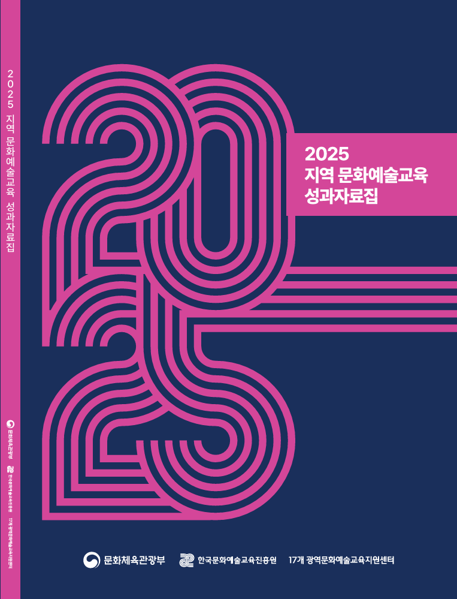

전체
문화예술교육현장
연구보고서
행사자료
연수자료
문화예술교육사
국제교류
연차보고서
기타
한국문화예술교육진흥원 저작권 자료에는
가 표시됩니다
전체 4,793건
페이지 1 / 200
최신순조회순

문화예술교육현장
2025 지역 문화예술교육 성과자료집
2025년 지역 문화예술교육의 추진 경과와 주요 성과, 지역별 운영 사례를 종합적으로 정리한 성과자료집으로, 지역 문화예술교육 정책 흐름과 현장 실천 사례, 사업 운영 성과, 향후 지역 기반 문화예술교육의 지속 방향
문화예술교육현장
꿈다락 문화예술학교 프로그램 북
2025년 지역 문화예술교육의 추진 경과와 주요 성과, 지역별 운영 사례를 종합적으로 정리한 성과자료집으로, 지역 문화예술교육 정책 흐름과 현장 실천 사례, 사업 운영 성과, 향후 지역 기반 문화예술교육의 지속 방향
123
456
789
10